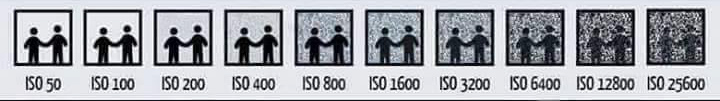
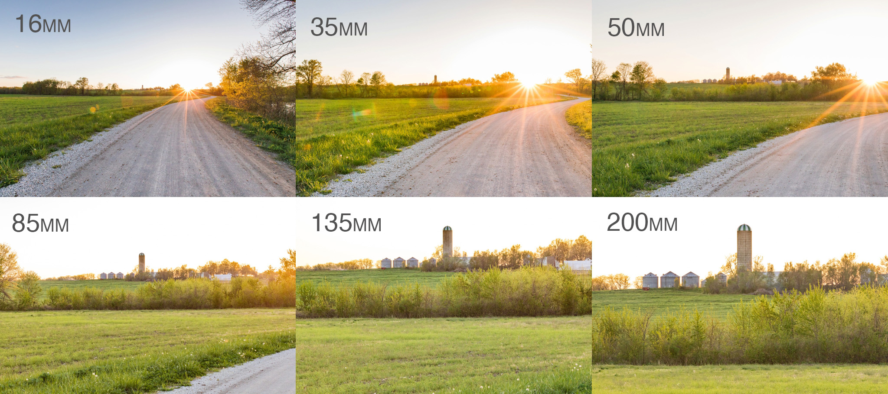
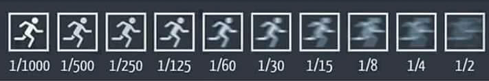
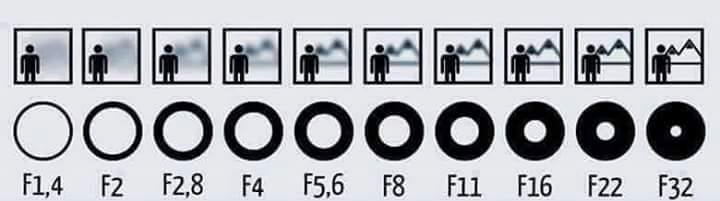

Portfolio 2017
Visualisering & design
Farveteori
RGB & CMYK
Til toppenFarvehjulet
Til toppenGestaltlove & Designprincipper
Til toppenTypografi
Til toppenFotografi
ISO
ISO er grundlæggende et udtryk for, hvor lysfølsomt sensoren i kameraet er for lys.
Jo lavere ISO jo mindre lysfølsomt er sensoren, og dermed betyder en højere ISO at kameraet er mere følsomt over for lys.
Det vil altså sige, at når kameraet står på ISO 100 er det mindre lysfølsomt, end hvis kameraet står på ISO 3200.
Lysfølsomheden kommer desværre ikke uden en pris. Det er nemlig sådan, at en høj ISO også vil give mere støj på billedet end en lav ISO.
Altså vil ISO 100 ikke give særlig meget støj på billedet, hvorimod ISO 3200 vil give en del mere støj på billedet.
Derfor forsøger man også, at holde ISO'en så lav som muligt, for at undgå støj på billedet.
En høj ISO bruges mest når man fotograferer steder, hvor der ikke er særlig meget lys.
Brændvidde
Kilde:Cole's Classroom
Brændvidden angives i millimeter, og angiver hvor meget eller hvor lidt af et motiv der kommer med.
Et mindre tal, f.eks. 14 mm., angiver at der kommer meget motiv med hvorimod et større tal på f.eks. 200 mm. betyder at det er mere "zoomet ind" på motivet.
På et fullframe kamera (kamera med en sensor på 35 mm) vil et objektiv på 50 mm vil brændvidden på objektivet passe med den mængde af et motiv som det menneskelige øje ser.
Mindre tal end det, vil sige at der kommer mere med på billedet end det vi kan se, mens en større brændvidde vil give mindre motiv end hvad vi ser.
Lukkertid & Lukkerhastighed
Lukkertid er et udtryk for hvor længe et kamera lukker lys ind på sensoren, og den hastighed et kamera lukker med.
Jo længere kameraet er åbent, jo mere lys bliver der lukket ind, og jo lysere bliver billedet i sidste ende.
Jo længere et kamera er åbent jo mere følsomt overfor bevægelse bliver det også.
Derfor vælger man en hurtig lukkerhastighed når man tager billeder af noget der er i bevægelse,
mens man med fordel kan vælge en langsommere lukkehastighed når man tager billeder af f.eks. et landskab.
Lukkerhastighed angives i dele af et sekund f.eks. betyder lukkerhastighed 1/60 at kameraet er åbent for lys i 60nde del af et sekund.
Til toppenBlænde
Modsat lukkerhastigheden er blænden noget der bliver bestemt og styret i objektivet og ikke kameraet.
For det første bestemmer blænden hvor åbent objektivet er, og derfor også hvor meget lys der kommer ind gennem objektivet.
Jo mindre blændetal, jo større åbning i objektivet og jo mere lys kommer igennem objektivet og ind i sensoren.
Jo større blændetal, jo mindre er åbningen i objektivet og jo mindre lys kommer igennem objektivet.
Altså vil blænde f1.4 lukke mere lys ind i kameraet end f16.
Blænden bestemmer også dybdeskarpheden i et billede, altså hvor meget af billedet der er i fokus.
Hvis du fokuserer på et objekt, så vil dybdeskarpheden være et udtryk for, hvor meget andet i billedet, målt i afstande der er i fokus.
Jo mindre blændetallet er, jo mindre er dybdeskarpheden og jo større blændetal jo større dybdeskarphed.
Altså vil der på f1.4 være mindre af billedet der er i fokus end når blænden er f16.
Videoproduktion
Til toppenProgrammer
Photoshop
 Til toppen
Til toppen
Illustrator
 Til toppen
Til toppen
InDesign
 Til toppen
Til toppen
Premiere Pro
 Til toppen
Til toppen